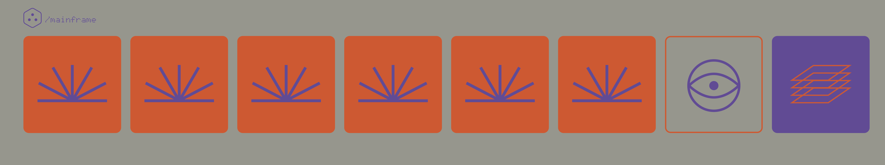

O número certo. O símbolo certo. O lugar certo.
Junta símbolos. Ordena números.Faz cada espaço contar.
Uma partida de 12 turnos por jogador. Regras clássicas v0.3.
2–5 jogadores · 8+ · 15–25 min por partida90 cartas · CO-OP: exatamente 4 jogadores.
Notas suspensas, camadas suaves e espaço para pensar.
Composição generativa original do INTERVAL. Sem loop fixo.Ao sair deste separador, a música pausa.